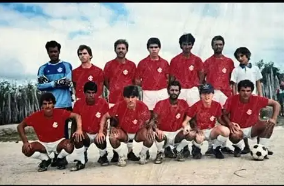
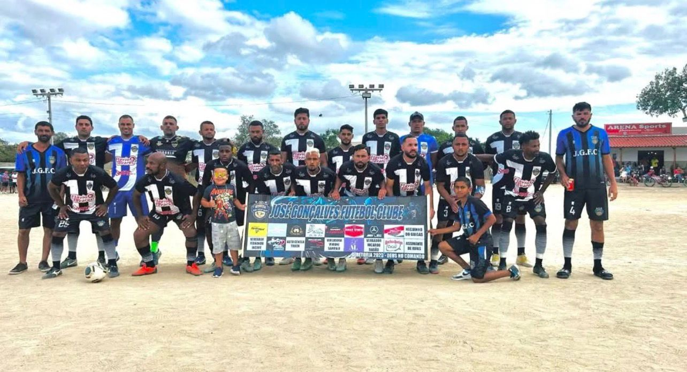
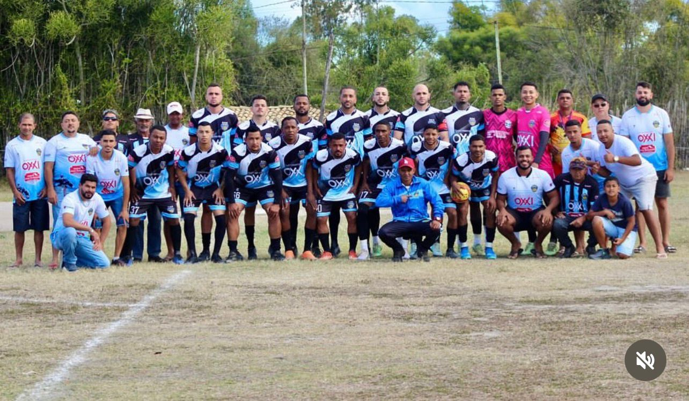

Esporte
1972
2023
2025
O GUIGÓ Futebol Clube foi criado em 1970, de acordo com algumas fontes, e desde então tem representado com orgulho a comunidade em torneios, jogos e copas rurais, atraindo centenas de pessoas da região e de outros municípios. Além de promover o esporte, o clube movimenta a economia local, especialmente nos domingos de jogo, quando moradores e visitantes se reúnem na praça, transformando o momento esportivo em um verdadeiro evento social. Essas ocasiões costumam se estender em grandes festas, com destaque para o Bar da Zene e o Bar de Dazo, pontos tradicionais que recebem o público e mantêm viva a tradição festiva do distrito.
No dia 24 de junho, o time da região e membros do seu fã-clube organizam o tradicional “Baba de Saia”, um evento já conhecido em José Gonçalves. Nessa celebração, os homens se vestem com trajes femininos e participam de uma partida divertida e simbólica, que reforça o espírito de união e descontração da comunidade. Após o jogo, todos se reúnem no Bar de Eduardo, no famoso Guigó de Cima, onde ocorre uma grande festa com churrasco, música e bebidas, reunindo moradores e visitantes em um momento de alegria e confraternização.